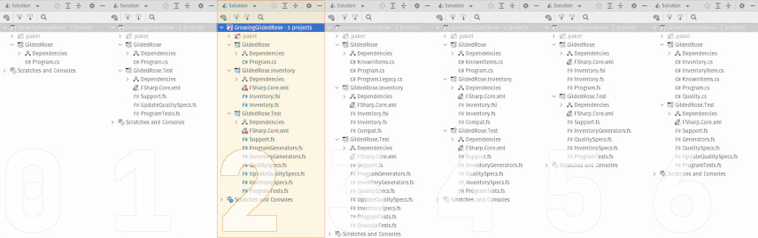

This is part two-of-four in the series, Growing a Gilded Rose. Over the course of these four blog posts, I hope to demonstrate incrementally improving a legacy code base which has thorny requirements, while also presenting a few different software development tools or concepts. The full series is as follows:
- Make it Testable
- Next Year's Model (this post)
- When Worlds Collide
- A New Requirement Appears
Bonus Content

Overview
So last time, we got acquainted with our problem domain, the
Gilded Rose Kata. We made a tiny change to the existing code to enable a
very crude sort of approval test. Then, using this test to guide us, we made
another small change. This one enabled us to write a few
property-based tests. We tested nine properties in total, based on the
observed behavior of the program and an informal explanation (which we received
as part of the overall requirements). The code, as it stands at the end of the
previous post, is available in the companion repository, in a branch
called 1_testable. But it's all been very casual, so far.
In this post, we'll build on our previous work to define a proper domain model. That is, we will make explicit, in code, the important business details, which until now have been merely implicit in the behavior of the legacy software. Further, we will extend our suite of tests to exercise the logic of our model. It's also worth noting what we won't do. Specifically, we won't touch the legacy code at all!
Adding a Model
To begin working on our domain model, we will add a new F# library project to our existing solution. We're forced to do this because you cannot mix C# and F# in the same unit of compilation (also referred to as a “project”). The library, though, requires no special configuration or any extra references. Further the project itself only contains two files:
Inventory.fsi, an F# signature file.Inventory.fs, an F# source file.
As for the actual model, carefully re-reading the description brings to light a few different requirements:
- Each inventory item has one, and only one, “kind”.
- Most items have a “quality”, which changes over time.
- Quality is a constrained value.
- Some item's have a different kind of quality which does not change.
- Unchanging qualities do not have the same constraints as those which change.
- Most items have an “age”, some do not.
- An item's quality is updated using rules specific to its kind.
Further buried in the actual implementation of UpdateQuality are other facts:
- An item's kind is determined by its “name”, which never changes.
- When an item's quality is updated, so too is its age.
- Item's are aged one whole (integral) “day” at a time.
Working through the signature file (from top to bottom) we can see all of these points addressed with five relatively simple constructs. First, we have a unit of measure:
/// A common unit of time (n.b. "business day" -- not necessarily a "solar day").
type [<Measure>] days
We'll use this to distinguish an item's age, which we'll actually call “Sell In”, so as to be consistent with the vocabulary used by domain experts (i.e. other Gilded Rose employees). This will help to address point ten from the previous list.
Then we define a struct to represent the constrained value of an item:
/// The value of a ordinary item
/// (n.b. constrained within: 0 .. 50 "units", inclusive).
[<Struct>]
type Quality =
private { Value : uint8 }
/// The smallest possible value of a Quality (0 "units").
static member MinValue : Quality
/// The largest possible value of a Quality (50 "units").
static member MaxValue : Quality
/// Constructs a Quality from the given value
/// (n.b. overlarge inputs are truncated to Quality.MaxValue).
static member Of : value : uint8 -> Quality
/// Defines an explicit conversion of a Quality to an unsigned 8-bit integer.
static member op_Explicit : Quality -> uint8
/// Adds two Quality values
/// (n.b. result does not overflow, but is truncated to Quality.MaxValue).
static member ( + ) : left : Quality * right : Quality -> Quality
/// Subtracts two Quality values
/// (n.b. result does not underflow, but is truncated to Quality.MinValue).
static member ( - ) : left : Quality * right : Quality -> Quality
This is very much in the vein of a “Value Object”, as one might find in literature about Domain Driven Design. It actually follows a coding style I've written about a few times in the past. It defines a primitive type which:
- has a minimum value (line 8)
- has a maximum value (line 11)
- can be increased or decreased (lines 22 and 26)
- can be converted to or from a
uint8(i.e. an 8-bit whole number, lines 15 and 18).
The most important detail of this type is that values are truncated on both the
high and low ends. That is, rather than having operations like addition and
subtract “wrap around” (e.g. 49 + 3 = 2), we simple “cap” at MinValue or
MaxValue (e.g. 49 + 3 = 50) We can see how this is achieved in this excerpt
from Inventory.fs (n.b. comments added solely for this blog post):
// ... other functionality elided ...
static member Of(value) =
// Internally we store values in a yte. Since the smallest possible
// value for a yte (0) is also the smallest possible value for a
// Quality, on construction we only have to guard against over-large
// inputs, which we truncate to Quality.MaxValue (50).
{ Value = min value 50uy }
static member ( + ) (left, right) =
let sum = left.Value + right.Value
// ⮟⮟⮟ simple check for "wrap around"
if sum < left.Value then Quality.MaxValue else Quality.Of(sum)
static member ( - ) (left, right) =
let dif = left.Value - right.Value
// ⮟⮟⮟ simple check for "wrap around"
if left.Value < dif then Quality.MinValue else Quality.Of(dif)
Returning to our signature file, we also define a struct for our “constant” value, though it requires significantly less functionality:
/// The value of an extraordinary item (80 "units", always).
[<Struct>]
type MagicQuality =
/// Defines an explicit conversion of a MagicQuality to an unsigned 8-bit integer.
static member op_Explicit : MagicQuality -> uint8
Next, we make, perhaps, the most important change from the legacy code. We
explicitly codify the various “kinds” of inventory items. To recap, this is
how an Item is defined in the original program (and remember, we cannot
change this, lest we ire the goblin in the corner):
public class Item
{
public string Name { get; set; } = "";
public int SellIn { get; set; }
public int Quality { get; set; }
}
However, when we re-read the description of the system, we find no less than four different types of inventory. As these are mutually exclusive, we can neatly describe the whole lot with a discriminated union:
/// Tracks the category, name, value, and "shelf life" of any inventory.
type Item =
/// An item with a constant value and no "shelf life".
| Legendary of name : string * quality : MagicQuality
/// An item whose value decreases as its "shelf life" decreases.
| Depreciating of name : string * quality : Quality * sellIn : int32<days>
/// An item whose value increases as its "shelf life" decreases.
| Appreciating of name : string * quality : Quality * sellIn : int32<days>
/// An item whose value is subject to complex, "shelf life"-dependent rules.
| BackstagePass of name : string * quality : Quality * sellIn : int32<days>
Effectively, each kind of inventory item gets its own “variant” (or “case” or
“label”), plus any relevant data. It is important to note, conceptually:
this is still only one type. But it can exist in exactly one of these four --
and only these four -- states. Further, though we may refer to the field as
“age” or “shelf life” elsewhere, here we use the term sellIn, as this
reflects usage in both the legacy code and by domain experts (i.e. other
Gilded Rose inn employees).
So far, we've address roughly 7 or 8 of the 10 requirements listed above. All of the remaining behavior will be accounted for in a single function, given at the end of the signature file as:
/// Change the quality and "shelf life" for an Item
/// (i.e. apply appropriate rules for the passage of a single "business day").
val updateItem : item : Item -> Item
This seemingly simple fellow is somewhat analogous to the body of the foreach
loop in the original code's UpdateQuality method. That is, it operates on a
single inventory item. However, rather than modifying the item in place, it
takes an item as input and returns a new item as output. Given the immutable
nature of discriminated unions, this is hardly surprising. However, this also
makes it easier to reason about and test the code. Let's now jump back to the
implementation file and see the details. The function, in its entirety, is as
follows (we'll break it down immediately after):
let updateItem item =
// advance the "shelf life" clock by a single day
let (|Aged|) sellIn = Aged(sellIn - 1<days>)
// items with negative "shelf life" gain/lose value twice as quickly
let rateOfChange sellIn = if sellIn < 0<days> then 2uy else 1uy
match item with
| Legendary _ -> item
| Depreciating (name, quality, Aged sellIn') ->
let quality' = quality - Quality.Of(rateOfChange sellIn')
Depreciating(name, quality', sellIn')
| Appreciating (name, quality, Aged sellIn') ->
let quality' = quality + Quality.Of(rateOfChange sellIn')
Appreciating(name, quality', sellIn')
| BackstagePass (name, quality, sellIn & Aged sellIn') ->
let quality' =
if sellIn' < 0<days> then
Quality.MinValue
else
// NOTE
// ----
// Pass quality has a "hard cliff", based on "shelf life".
// However, until then, its value is calculated against
// the _current_ expiry (i.e. before advancing the clock).
quality + Quality.Of(
match sellIn with
| days when days <= 5<days> -> 3uy
| days when days <= 10<days> -> 2uy
| _ -> 1uy
)
BackstagePass(name, quality', sellIn')
The implementation begins by defining two helpers:
- an active pattern for reducing the “shelf life” of an item
- a function to determine how quickly an item's quality will degrade.
// advance the "shelf life" clock by a single day
let (|Aged|) sellIn = Aged(sellIn - 1<days>)
This single-case total active pattern works more-or-less like an ordinary
function (in fact, you could use it that way if you really wanted). It takes
a number of days as input, and returns that number reduced by one day. But,
by making it an active pattern, we can perform this operation anyplace where
one might pattern match! We'll see this put to good use very soon.
// items with negative "shelf life" gain/lose value twice as quickly
let rateOfChange sellIn = if sellIn < 0<days> then 2uy else 1uy
This function helps determine how quickly an item's Quality increases or
decreases. It's basically a multiplier, such that when an item's “shelf life”
is negative, things change twice as fast. In any other case, value is altered
at the normal rate (i.e. changed by one “unit”).
Next, we have a match expression, which takes different actions based on
the kind of inventory item passed into the function. Notice the symmetry
between the definition of Item and how we pattern match against an instance
of it. This effectively replaces the many many if statements in the legacy
code. And it no longer requires potentially fragile string comparisons in
order to make decisions. Further, it groups together related bits of logic.
Let's consider each case in turn.
match item with
| Legendary _ -> item
This one is straight-forward. To quote the initial project description:
... a legendary item, never has to be sold or decreases in Quality.
Basically, being given a Legendary item is a non-operation. So we immediately
return the input data exactly as we received it. Then things gets more
interesting.
match item with
// ... other code elided ...
| Depreciating (name, quality, Aged sellIn') ->
let quality' = quality - Quality.Of(rateOfChange sellIn')
Depreciating(name, quality', sellIn')
Depreciating items are those items whose value decreases every time the "shelf
life" decreases. First, we extract the name and quality fields. Technically,
we also extract the sellIn field. But that's hidden behind an invocation of
the (|Aged|) active pattern, which is giving us a new “shelf life”, bound to
sellIn', which has already been reduced by one day. Effectively, we “advance
the clock” at the same time as decomposing the item into its constituent parts.
Then, with the help of the rateOfChange function we defined earlier, we make
a new value (quality'), which has been appropriately reduced. Finally, we
package up the name, the reduced quality, and the aged “shelf life” into a
new instance of a Depreciating item. And, as this is the last expression in
the current code path, it becomes a return value for the overall function.
Next, we have Appreciating items, which are very similar to Depreciating
ones. However, in this variant, the relationship between time and value is
inverted. When “shelf life” decreases, quality increases.
match item with
// ... other code elided ...
| Appreciating (name, quality, Aged sellIn') ->
let quality' = quality + Quality.Of(rateOfChange sellIn')
Appreciating(name, quality', sellIn')
This is a simple matter of using addition, where we'd previously used
subtraction, to produce a new value for the item. It is interesting to note:
the rateOfChange helper function is still used in exactly the same way.
Finally, we arrive at the branch for the inventory item type with the most
complex update logic: backstage passes. A BackstagePass increases in value
by several different increments, depending on its “shelf life”. However, it
also ceases to be worth anything, after a certain point-in-time. We start by
decomposing the item into its constituents.
match item with
// ... other code elided ...
| BackstagePass (name, quality, sellIn & Aged sellIn') ->
However, unlike the previous cases, here we extract two values for the item's
“shelf life”. sellIn is the value which was passed into the updateItem
function. That is, it's the age before “advancing the clock”. Meanwhile,
sellIn' is the newly advanced age, and it comes from the (|Aged|) active
pattern (just as we did for depreciating and appreciating items).
Next, we have to determine the updated value of the item's quality. This is a
bit non-obvious, as it requires first checking the updated “shelf life” (sellIn').
let quality' =
if sellIn' < 0<days> then
Quality.MinValue
If we're passed the day of the show for which the BackstagePass grants access,
it's not worth anything. So, the pass's new worth (quality') is just set to
Quality.MinValue (which happens to be zero units). However, if the show's
not-yet-started, things get more complex. We increase the item's worth. But the
amount of increase is determined by the “shelf life” before any aging has
taken place (sellIn).
let quality' =
// ... code elided ...
else
// NOTE
// ----
// Pass quality has a "hard cliff", based on "shelf life".
// However, until then, its value is calculated against
// the _current_ expiry (i.e. before advancing the clock).
quality + Quality.Of(
match sellIn with
| days when days <= 5<days> -> 3uy
| days when days <= 10<days> -> 2uy
| _ -> 1uy
)
Thus, quality is incremented by three units when the show is less than six days away. The increment falls to two units when the show is less then eleven days away. Finally, if we've got more than ten days to wait, the worth of backstage pass will increase by one unit.
BackstagePass(name, quality', sellIn')
We conclude the current branch (and the updateItem function) by building and
returning a new BackstagePass instance, comprised of the original item's
name, the increased -- or worthless! -- quality, and the aged “shelf life”.
Testing a Model
Now that we've formalized the domain logic, it behooves us to test everything. Again, we will leverage property-based testing. In fact, we will duplicate the existing tests, "re-phrasing" them in terms of our new model. As this winds up being a useful-but-rote conversion, we won't explore it here. Instead, we will highlight one very interesting deviation.
Perhaps the most obvious -- but most significant -- change in the new model is
the creation of the Quality type. This value object encodes logic which was
previously only manifest in the behavior of the UpdateQuality method. This
change also gives rise to an important change in the test suite. Instead of one
single test (after +N days, ordinary item has 0 <= quality <= 50),
included in UpdateQualitySpecs.fs, we have an entire set of new assertions
around the behavior of the Quality type. Specifically, we ensure that creation,
addition, and subtraction all uphold our invariants (i.e. never less than 0 and
never more than 50). The portions of QualitySpecs.fs covering the classical
arithmetic properties of addition are as follows (comments added for this post):
module QualitySpecs =
// ... other tests elided ...
[<Property>]
let `additive identity holds` quality =
// incrementing by nothing is a non-operation ... A + 0 = A
quality + Quality.MinValue = quality
[<Property>]
let `addition is commutative` (quality1 : Quality) (quality2 : Quality) =
// ordering of operands does NOT matter ... A + B = B + A
quality1 + quality2 = quality2 + quality1
[<Property>]
let `addition is associative`
(quality1 : Quality)
(quality2 : Quality)
(quality3 : Quality)
=
// grouping of operands does NOT matter ... A + (B + C) = (A + B) + C
quality1 + (quality2 + quality3) = (quality1 + quality2) + quality3
// ... other tests elided ...
So, not only have we made explicit some key behavior in the system, but also we have greatly increased our confidence in the logical soundness of that behavior.
Conclusion
Building on previously gained insights, we've now:
- Formally codified the program's behavior into a domain model.
- Expanded and further improved the soundness of our test coverage.
And all of the code listed above, plus several other bits and bobs, may
be found in the companion repository, in a branch called 2_model-fs.
It might not seem like it, but we've come a very long way in a very short period of time. Having all the pieces in place means we're now ready to start adding new features. Weeeeeell, we're almost ready. But not quite. 😉 Before we add support for new “conjured” items, we need to integrate the F# model into our C# program, which is the subject of the next blog post. Or, if you prefer, visit the discussion forum to ask questions and share feedback for this post (or any of the other in the series).